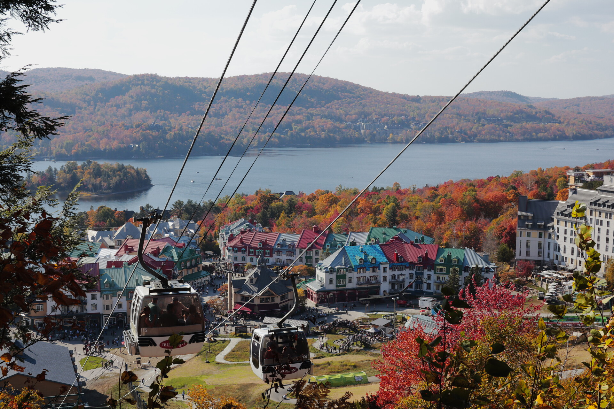

A rather boring week
Hello! 3 day late Erik here! Shorter post this week. Last week was rather uninteresting. Except for another nature adventure, I was stressed about school and that was kinda it. At least now I only have two days left until the autumn break, which I…
Continue reading...